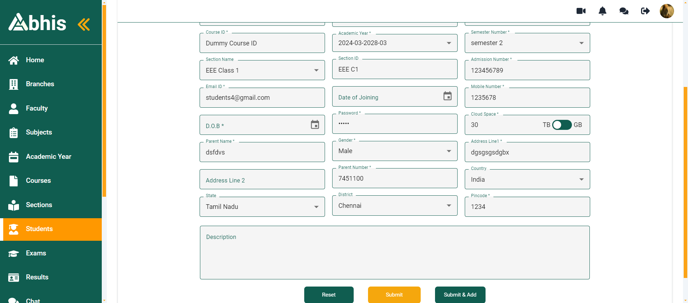

-
College - Admin Module
5:01:48 pm / 00:01:57:582 Fail
College - Admin Module
04.22.2024 5:01:48 pm 04.22.2024 5:03:45 pm 00:01:57:582 · #test-id=1PassPositive Scenario - Admin ModuleGiven Once user enter the homepage click the admin menu.Given Once user enter the admin page click addadmin button.When Enter the all credials in admin.Then Check the data has been present or not in admin page.PassWithout enter anything click submit button in adminGiven Once user enter the homepage click the admin menu.Given Once user enter the admin page click addadmin button.When Click the submit button in admin page.Then Check how it behave in admin page.FailWithout enter anything click submit and add button in adminGiven Once user enter the homepage click the admin menu.Given Once user enter the admin page click addadmin button.When Click the submit and add button in admin page.Then Check how it behave in admin page whether it shows error message or not.hooks.SetUpAndTearDown.addScreenShot(io.cucumber.java.Scenario)imageFailWithout enter anything some data is present refresh the pageGiven Once user enter the homepage click the admin menu.Given Once user enter the admin page click addadmin button.Then Refresh the page and check.hooks.SetUpAndTearDown.addScreenShot(io.cucumber.java.Scenario)imagePassPositive Sceanrio - Admin - Click OptionPassPositive Sceanrio - Admin - Click OptionGiven Once user enter the homepage click the admin menu.Given Once user enter the admin page click addadmin button.When Enter the all credials in admin like "Admin2","Admin002","admin2@gmail.com","12345","441142".Then Click the respective role in admin.PassPositive Sceanrio - Admin - Click OptionGiven Once user enter the homepage click the admin menu.Given Once user enter the admin page click addadmin button.When Enter the all credials in admin like "Admin3","Admin003","admin3@gmail.com","12345","9089890".Then Click the respective role in admin.PassPositive Sceanrio - Admin - Click OptionGiven Once user enter the homepage click the admin menu.Given Once user enter the admin page click addadmin button.When Enter the all credials in admin like "Admin4","Admin004","admin4@gmail.com","12345","7889898".Then Click the respective role in admin.PassPositive Sceanrio - Admin - Click Add OptionGiven Once user enter the homepage click the admin menu.Given Once user enter the admin page click addadmin button.When Enter the all credials in admin and click the add permission.Then Click the submit button in admin page.PassPositive Sceanrio - Admin - Click Edit OptionGiven Once user enter the homepage click the admin menu.Given Once user enter the admin page click addadmin button.When Enter the all credials in admin and click the Edit permission.Then Click the submit button in admin page.PassPositive Sceanrio - Admin - Click Delete OptionGiven Once user enter the homepage click the admin menu.Given Once user enter the admin page click addadmin button.When Enter the all credials in admin and click the delete permission.Then Click the submit button in admin page.FailEdit - AdminGiven Once user enter the homepage click the admin menu.Given User click the edit icon in adminThen Check all values are present in adminhooks.SetUpAndTearDown.addScreenShot(io.cucumber.java.Scenario)imageFailNegative Sceenario - AdminGiven Once user enter the homepage click the admin menu.Given Once user enter the admin page click addadmin button.When Enter the all credials in admin and dont select permissionThen Click the submit button in admin page.But If it allow its bug.hooks.SetUpAndTearDown.addScreenShot(io.cucumber.java.Scenario)image -
College - Support Module
5:03:45 pm / 00:00:55:651 Fail
College - Support Module
04.22.2024 5:03:45 pm 04.22.2024 5:04:41 pm 00:00:55:651 · #test-id=133PassPositive Scenario - Support ModuleGiven Once user enter the homepage click the support menu.Given Once user enter the admin page click addSupport button.When Enter the all credials in support.Then Check the data has been present or not in support page.PassWithout enter anything click submit button in supportGiven Once user enter the homepage click the support menu.Given Once user enter the admin page click addSupport button.When Click the submit button in support page.Then Check how it behave in support page.FailWithout enter anything click submit and add button in supportGiven Once user enter the homepage click the support menu.Given Once user enter the admin page click addSupport button.When Click the submit and add button in support page.Then Check how it behave in support page whether it shows error message or not.hooks.SetUpAndTearDown.addScreenShot(io.cucumber.java.Scenario)imageFailEnter the mandatory fields in support pageGiven Once user enter the homepage click the support menu.Given Once user enter the admin page click addSupport button.When Enter the mandatatory fields only.Then Check how its behave in support page.hooks.SetUpAndTearDown.addScreenShot(io.cucumber.java.Scenario)imageFailUpload a big mb videos in doc how it behaves.Given Once user enter the homepage click the support menu.Given Once user enter the admin page click addSupport button.When Enter the credentials and try to upload more mb data.Then Check whether the videos has been upload oe not.hooks.SetUpAndTearDown.addScreenShot(io.cucumber.java.Scenario)imageFailSearch module in support pageGiven Once user enter the homepage click the support menu.Given Search some word like "V" in support.When Check All words contains V char in support.hooks.SetUpAndTearDown.addScreenShot(io.cucumber.java.Scenario)image -
College - Exam
5:04:41 pm / 00:02:15:816 Fail
College - Exam
04.22.2024 5:04:41 pm 04.22.2024 5:06:57 pm 00:02:15:816 · #test-id=198PassPositive Scenario for exam moduleGiven Once user enter the homepage click the exam menu.Given Once user enter the admin page click addExam button.When Enter all credentials in exam module.Then Exam has been created or not.PassWithout enter anything click submit button in examGiven Once user enter the homepage click the exam menu.Given Once user enter the admin page click addExam button.When Click the submit button in exam page.Then Check how it behave in exam page.FailWithout enter anything click submit and add button in examGiven Once user enter the homepage click the exam menu.Given Once user enter the admin page click addExam button.When Click the submit and add button in exam page.Then Check how it behave in exam page whether it shows error message or not.hooks.SetUpAndTearDown.addScreenShot(io.cucumber.java.Scenario)image PassPositive Scenario - Exam LinkGiven Once user enter the homepage click the exam menu.Given Once user enter the admin page click addExam button.When Enter all credentials in exam module and select link type.Then Check Exam has been created or not.PassPositive Scenario - File UploadGiven Once user enter the homepage click the exam menu.Given Once user enter the admin page click addExam button.When Enter all credentials in exam module and select file upload.Then Check Exam has been created or not.FailNegative Scenario - Exam ModuleGiven Once user enter the homepage click the exam menu.Given Once user enter the admin page click addExam button.When Enter all credentials in exam modulesThen Throw Errors.hooks.SetUpAndTearDown.addScreenShot(io.cucumber.java.Scenario)imageFailNegative Scenario1 - Exam ModuleGiven Once user enter the homepage click the exam menu.Given Once user enter the admin page click addExam button.When Enter all credentials in exam modules except exam typehooks.SetUpAndTearDown.addScreenShot(io.cucumber.java.Scenario)imageThen Click submit and add icon and check how it behave.Step skippedPassExisiting data entered and then click submitGiven Once user enter the homepage click the exam menu.Given Once user enter the admin page click addExam button.When Enter all credentials in exam module and select link type.Then Error Message showing or not in exam page.FailEnter mantatory fields only in examGiven Once user enter the homepage click the exam menu.Given Once user enter the admin page click addExam button.When Enter the mandatory fields in exam module.Then Check its created or not in exam page.hooks.SetUpAndTearDown.addScreenShot(io.cucumber.java.Scenario)imagePassNegative Scenario in mark fields.Given Once user enter the homepage click the exam menu.Given Once user enter the admin page click addExam button.When Enter the validation and in total mark entered "50" and pass mark is "51".Then Check the error message shows or not related to mark.FailNegative Scenario1 in mark fields.Given Once user enter the homepage click the exam menu.Given Once user enter the admin page click addExam button.When Enter the validation and in total mark entered "-50" and pass mark is "-51".Then Check the error message shows or not related to mark in exam module.hooks.SetUpAndTearDown.addScreenShot(io.cucumber.java.Scenario)imageFailIrrelevant answer in answer fields and check how its behaveGiven Once user enter the homepage click the exam menu.Given Once user enter the admin page click addExam button.When Enter the values and enter irrelevant answer in answer fieldBut If its allow its bug.hooks.SetUpAndTearDown.addScreenShot(io.cucumber.java.Scenario)imagePassPostive Scenario - Search some char in exam search box and check it contains this char in sec menuGiven Once user enter the homepage click the exam menu.Given User search the some word in search box like "um" in exam menu.Then Grab all the text and check all the word this char is present or not in exam menu.PassNegative Scenario Search irrelevant char and check how it behaveGiven Once user enter the homepage click the exam menu.Given Search some word like "q" in exam.When Error message need to shows in exam.PassDelete the branch in exam moduleGiven Once user enter the homepage click the exam menu.Given Click the delete icon in examThen Click the Yes option in exam
PassPositive Scenario - Exam LinkGiven Once user enter the homepage click the exam menu.Given Once user enter the admin page click addExam button.When Enter all credentials in exam module and select link type.Then Check Exam has been created or not.PassPositive Scenario - File UploadGiven Once user enter the homepage click the exam menu.Given Once user enter the admin page click addExam button.When Enter all credentials in exam module and select file upload.Then Check Exam has been created or not.FailNegative Scenario - Exam ModuleGiven Once user enter the homepage click the exam menu.Given Once user enter the admin page click addExam button.When Enter all credentials in exam modulesThen Throw Errors.hooks.SetUpAndTearDown.addScreenShot(io.cucumber.java.Scenario)imageFailNegative Scenario1 - Exam ModuleGiven Once user enter the homepage click the exam menu.Given Once user enter the admin page click addExam button.When Enter all credentials in exam modules except exam typehooks.SetUpAndTearDown.addScreenShot(io.cucumber.java.Scenario)imageThen Click submit and add icon and check how it behave.Step skippedPassExisiting data entered and then click submitGiven Once user enter the homepage click the exam menu.Given Once user enter the admin page click addExam button.When Enter all credentials in exam module and select link type.Then Error Message showing or not in exam page.FailEnter mantatory fields only in examGiven Once user enter the homepage click the exam menu.Given Once user enter the admin page click addExam button.When Enter the mandatory fields in exam module.Then Check its created or not in exam page.hooks.SetUpAndTearDown.addScreenShot(io.cucumber.java.Scenario)imagePassNegative Scenario in mark fields.Given Once user enter the homepage click the exam menu.Given Once user enter the admin page click addExam button.When Enter the validation and in total mark entered "50" and pass mark is "51".Then Check the error message shows or not related to mark.FailNegative Scenario1 in mark fields.Given Once user enter the homepage click the exam menu.Given Once user enter the admin page click addExam button.When Enter the validation and in total mark entered "-50" and pass mark is "-51".Then Check the error message shows or not related to mark in exam module.hooks.SetUpAndTearDown.addScreenShot(io.cucumber.java.Scenario)imageFailIrrelevant answer in answer fields and check how its behaveGiven Once user enter the homepage click the exam menu.Given Once user enter the admin page click addExam button.When Enter the values and enter irrelevant answer in answer fieldBut If its allow its bug.hooks.SetUpAndTearDown.addScreenShot(io.cucumber.java.Scenario)imagePassPostive Scenario - Search some char in exam search box and check it contains this char in sec menuGiven Once user enter the homepage click the exam menu.Given User search the some word in search box like "um" in exam menu.Then Grab all the text and check all the word this char is present or not in exam menu.PassNegative Scenario Search irrelevant char and check how it behaveGiven Once user enter the homepage click the exam menu.Given Search some word like "q" in exam.When Error message need to shows in exam.PassDelete the branch in exam moduleGiven Once user enter the homepage click the exam menu.Given Click the delete icon in examThen Click the Yes option in exam -
Branch Module
5:06:57 pm / 00:01:47:865 Fail
Branch Module
04.22.2024 5:06:57 pm 04.22.2024 5:08:45 pm 00:01:47:865 · #test-id=358PassPositive Scenario for Branch ModuleGiven Once user enter the homepage click the branch menu.Given Click the add branch icon.When Enter the all credentials like "Velam","VEL - 2","velam@gmail.com","56677889","677889","12345","vvv","gsdfdgabafbff","gsasgagassa","dsssdsd","3243","20"Then User click the Submit button.And Check the count of the faculty.PassNegative Scenario1 for Branch ModuleGiven Once user enter the homepage click the branch menu.Given Click the add branch icon.When Enter the all credentials like "Velam","VEL - 2","velam@gmail.com","56677889","677889","12345","vvv","gsdfdgabafbff","gsasgagassa","dsssdsd","3243","20"Then User click the Submit button.And Error Message showing or not.FailPositive Scenario - Add a new branch and check created date and timeGiven Once user enter the homepage click the branch menu.Given Click the add branch icon.When Enter the all credentials like "Velam3","VEL - 3","velam3@gmail.com","56677889","677889","12345","vvv","gsdfdgabafbff","gsasgagassa","dsssdsd","3243","20"Then User click the Submit button.And Check the created date and time.hooks.SetUpAndTearDown.addScreenShot(io.cucumber.java.Scenario)imagePassWithout Enter anything click submit icon and check how its behaveGiven Once user enter the homepage click the branch menu.Given Click the add branch icon.When Without enter anything click submit buttonThen Check the url how its behaveFailPositive Scenario - Add two data simutaneously by using submit and add button.FailPositive Scenario - Add two data simutaneously by using submit and add button.Given Once user enter the homepage click the branch menu.Given Click the add branch icon.When Enter the all credentials like "dsds" "faa1411" "fa@gamil.com" "243131" "4352" "12345" "dfbdbd" "fdsfbdfs" "iokhjkj" "hghvbjj" "789" "0998"And click submit and add iconThen Enter the all credentials like "dsds" "faa1411" "fa@gamil.com" "243131" "4352" "12345" "dfbdbd" "fdsfbdfs" "iokhjkj" "hghvbjj" "789" "0998"hooks.SetUpAndTearDown.addScreenShot(io.cucumber.java.Scenario)imageAnd Check the count.Step skippedFailPositive Scenario - Add two data simutaneously by using submit and add button.Given Once user enter the homepage click the branch menu.Given Click the add branch icon.When Enter the all credentials like "afdd" "gds231" "fda@gamil.com" "89900" "78789" "12345" "iuhj" "jbnn" "jhjk" "bnkm" "76778" "76889"And click submit and add iconThen Enter the all credentials like "afdd" "gds231" "fda@gamil.com" "89900" "78789" "12345" "iuhj" "jbnn" "jhjk" "bnkm" "76778" "76889"hooks.SetUpAndTearDown.addScreenShot(io.cucumber.java.Scenario)image And Check the count.Step skippedFailNegative Scenario2 - In email id and mobile number and cloud also do negative scenarios values check how it behaves.Given Once user enter the homepage click the branch menu.Given Click the add branch icon.When Enter the all credentials like "Velam4","VEL - 4","velam4@gmailcom","-56677889","677889","12345","vvv","gsdfdgabafbff","gsasgagassa","dsssdsd","3243","-20"Then User click the Submit button.And It need to show error message.hooks.SetUpAndTearDown.addScreenShot(io.cucumber.java.Scenario)imagePassPositive Scenario - Search some char in search box and check how its behaveGiven Once user enter the homepage click the branch menu.Given Search some word like "V".When Check All words contains V char.PassNegative Scenario Search irrelevant char and check how it behaveGiven Once user enter the homepage click the branch menu.Given Search some word like "q".When Error message need to shows.PassPositive Scenario - Edit - Check Branch ID is editable or notGiven Once user enter the homepage click the branch menu.Given Click the Edit iconWhen Check the branch id is editable or not.FailEdit - Check all value is present or notGiven Once user enter the homepage click the branch menu.Given Click the Edit iconWhen Check the values present in all fields.hooks.SetUpAndTearDown.addScreenShot(io.cucumber.java.Scenario)imageFailView the branchGiven Once user enter the homepage click the branch menu.Given Click the view iconWhen Check the value present in all fields.hooks.SetUpAndTearDown.addScreenShot(io.cucumber.java.Scenario)imagePassDelete the branchGiven Once user enter the homepage click the branch menu.Given Click the delete iconThen Click the Yes option
And Check the count.Step skippedFailNegative Scenario2 - In email id and mobile number and cloud also do negative scenarios values check how it behaves.Given Once user enter the homepage click the branch menu.Given Click the add branch icon.When Enter the all credentials like "Velam4","VEL - 4","velam4@gmailcom","-56677889","677889","12345","vvv","gsdfdgabafbff","gsasgagassa","dsssdsd","3243","-20"Then User click the Submit button.And It need to show error message.hooks.SetUpAndTearDown.addScreenShot(io.cucumber.java.Scenario)imagePassPositive Scenario - Search some char in search box and check how its behaveGiven Once user enter the homepage click the branch menu.Given Search some word like "V".When Check All words contains V char.PassNegative Scenario Search irrelevant char and check how it behaveGiven Once user enter the homepage click the branch menu.Given Search some word like "q".When Error message need to shows.PassPositive Scenario - Edit - Check Branch ID is editable or notGiven Once user enter the homepage click the branch menu.Given Click the Edit iconWhen Check the branch id is editable or not.FailEdit - Check all value is present or notGiven Once user enter the homepage click the branch menu.Given Click the Edit iconWhen Check the values present in all fields.hooks.SetUpAndTearDown.addScreenShot(io.cucumber.java.Scenario)imageFailView the branchGiven Once user enter the homepage click the branch menu.Given Click the view iconWhen Check the value present in all fields.hooks.SetUpAndTearDown.addScreenShot(io.cucumber.java.Scenario)imagePassDelete the branchGiven Once user enter the homepage click the branch menu.Given Click the delete iconThen Click the Yes option -
College - Faculty Module
5:08:45 pm / 00:01:36:101 Fail
College - Faculty Module
04.22.2024 5:08:45 pm 04.22.2024 5:10:21 pm 00:01:36:101 · #test-id=507PassPositive Sceanrio for Faculty ModuleGiven Once user enter the homepage click the faculty menu.Given Click the add faculty icon.When Enter the all credentials like "robert","FA-003","32","Phd","robert@gmail.com","12345","6436464643535","04/03/2000","10/05/2020","A+ve","fghjkm,","fghn","5678","gbhnjnnnnnnnnnnnnnnnnnnnnnnnnnnnnn"Then User click the Submit button.And Check the count of the faculty in homepage.PassWithout Enter anything click submit icon and check how its behaveGiven Once user enter the homepage click the faculty menu.Given Click the add faculty icon.When Without enter anything click the submit buttonThen Check the urls how its behaveFailCheck the date why it shows nullGiven Once user enter the homepage click the faculty menu.Given Grab the text in faculty pageAnd Click the add faculty icon.When Without enter date fields and enter the remaining field like "robert1","FA-004","324","Phd","robert1@gmail.com","12345","6436464643535","A+ve","fghjkm,","fghn","5678","gbhnjnnnnnnnnnnnnnnnnnnnnnnnnnnnnn"Then User click the Submit button.And Check how it behaves.hooks.SetUpAndTearDown.addScreenShot(io.cucumber.java.Scenario)imagePassNegative Scenario1 for Faculty ModuleGiven Once user enter the homepage click the faculty menu.Given Click the add faculty icon.When Enter the all credentials like "robert","FA-003","32","Phd","robert@gmail.com","12345","6436464643535","04/03/2000","10/05/2020","A+ve","fghjkm,","fghn","5678","gbhnjnnnnnnnnnnnnnnnnnnnnnnnnnnnnn"Then User click the Submit button.And Error Message showing or not.FailNegative Scenario2 in Date FieldsGiven Once user enter the homepage click the faculty menu.Given Click the add faculty icon.When User Select the upcoming date in DOB Fields and enter the remaining details like "robert2","FA-005","325","Phd","robert5@gmail.com","12345","6436464643535","A+ve","fghjkm,","fghn","5678","gbhnjnnnnnnnnnnnnnnnnnnnnnnnnnnnnn".Then User click the Submit button.And Check the condition is True or False.hooks.SetUpAndTearDown.addScreenShot(io.cucumber.java.Scenario)imageFailNegative Scenario3 in Email,Mobile,Pincode FieldsGiven Once user enter the homepage click the faculty menu.Given Click the add faculty icon.When Enter the all credentials like "robert","FA-003","32","Phd","opkl@gmailcom","12345","-6436464643535","04/03/2000","10/05/2020","A+ve","fghjkm,","fghn","-5678","gbhnjnnnnnnnnnnnnnnnnnnnnnnnnnnnnn"Then User click the Submit button.And It need to shows error message.hooks.SetUpAndTearDown.addScreenShot(io.cucumber.java.Scenario)imagePassPostive Scenario - Search some char in faculty search box and check it contains this charGiven Once user enter the homepage click the faculty menu.Given User search the some word in search box like "a".Then Grab all the text and check all the word this char is present or not.PassNegative Scenario - Search irrelevant char and check how its behaveGiven Once user enter the homepage click the faculty menu.Given User search irrelevant word like "k".Then Error Text is showing or not.PassEdit - Some FacultyGiven Once user enter the homepage click the faculty menu.Given Click the Edit icon.When Edit the name like "23".Then User click the Update button.And Check values has been changed or not.PassDelete Some FacultyGiven Once user enter the homepage click the faculty menu.Given Click the Delete iconWhen User click the yes optionThen Check the deleted faculty is present or not. -
College - Subject Module
5:10:21 pm / 00:00:54:957 Fail
College - Subject Module
04.22.2024 5:10:21 pm 04.22.2024 5:11:16 pm 00:00:54:957 · #test-id=628PassPositive Scenario for subject module.Given Once user enter the homepage click the Subject menu.Given User click the add subject iconWhen User enter the details like "Maths - 1","M1","Maths001".Then User click the submit icon.And Check the data present in subject page.FailNegative Scenario1 for Branch ModuleGiven Once user enter the homepage click the Subject menu.Given User click the add subject iconWhen User enter the details like "Maths - 1","M1","Maths001".Then User click the Submit button.And Error Message showing or not in subject page.hooks.SetUpAndTearDown.addScreenShot(io.cucumber.java.Scenario)imageFailNegative Scenario2 - Fac ID can able to clear the data or not.Given Once user enter the homepage click the Subject menu.Given User click the add subject iconWhen User enter the details like "Maths - 2","M2","Maths002".Then User can able to clear facID or not.hooks.SetUpAndTearDown.addScreenShot(io.cucumber.java.Scenario)imagePassWithout enter anything and check how it behave.Given Once user enter the homepage click the Subject menu.Given User click the add subject iconWhen Without enter anything click the submit buttonThen Check the fac urls how its behavePassEdit some values and check how its behaveGiven Once user enter the homepage click the Subject menu.Given User click the edit iconWhen Edit some values like "2"Then Click the update iconAnd Check Updated Value is presence or not.PassDelete some facultyGiven Once user enter the homepage click the Subject menu.Given Click the deleted iconWhen Click the yes optionThen verify deleted faculty is presence or not.PassSearch some valid FacultyGiven Once user enter the homepage click the Subject menu.Given Click the search optionWhen Enter the valid faculty nameThen Check the word contains in this fac namePassSearch some invalid FacultyGiven Once user enter the homepage click the Subject menu.Given Click the search optionWhen Enter the invalid faculty nameThen Error Text is showing or not in fac. -
Academic Modules
5:11:16 pm / 00:01:28:710 Fail
Academic Modules
04.22.2024 5:11:16 pm 04.22.2024 5:12:45 pm 00:01:28:710 · #test-id=723PassPostive Sceanrio for Academic ModuleGiven Once user enter the homepage click the Academic menu.Given user click the add academic button.When Enter the valid credentials.Then Click the submit button.And Check values has been shows or not.PassWithout enter anything click submit iconGiven Once user enter the homepage click the Academic menu.Given user click the add academic button.Then Click the submit button.Then Check how it behave.FailNegative Scenario - Valid From and Invalid To inputGiven Once user enter the homepage click the Academic menu.Given user click the add academic button.When Enter the vaid input and enter invalid inputThen Click the submit button.But If the data is present throw error.hooks.SetUpAndTearDown.addScreenShot(io.cucumber.java.Scenario)imageFailNegative Scenario - Working days FieldsGiven Once user enter the homepage click the Academic menu.Given user click the add academic button.When Enter the invalid data in "-21"Then Click the submit button.But If it allows throw error.hooks.SetUpAndTearDown.addScreenShot(io.cucumber.java.Scenario)imageFailNegativeScenario1 - Working days FieldsGiven Once user enter the homepage click the Academic menu.Given user click the add academic button.When Enter some invalid data in working fields.hooks.SetUpAndTearDown.addScreenShot(io.cucumber.java.Scenario)imagePassPositive Scenario - EditGiven Once user enter the homepage click the Academic menu.Given User click the edit iconsWhen User change working date valuesThen User click the update iconAnd Check the data has been changed or notFailWithout enter anything click submit and addGiven Once user enter the homepage click the Academic menu.Given user click the add academic button.When Click the submit and add button.hooks.SetUpAndTearDown.addScreenShot(io.cucumber.java.Scenario)image FailView - AcademicGiven Once user enter the homepage click the Academic menu.Given user click the view icon in aca year.Then check all the values present or not.hooks.SetUpAndTearDown.addScreenShot(io.cucumber.java.Scenario)image
FailView - AcademicGiven Once user enter the homepage click the Academic menu.Given user click the view icon in aca year.Then check all the values present or not.hooks.SetUpAndTearDown.addScreenShot(io.cucumber.java.Scenario)image
-
Course Module
5:12:45 pm / 00:00:37:593 Fail
Course Module
04.22.2024 5:12:45 pm 04.22.2024 5:13:22 pm 00:00:37:593 · #test-id=814PassWithout enter anything click submit button and check how it behaveGiven Once user enter the homepage click the Course menu.Given User click the addCourse icon.When Without enter any dataThen Click the submit icon.And Check how it behaves in course menu.PassPositive Scenario - Course ModuleGiven Once user enter the homepage click the Course menu.Given User click the addCourse icon.When Enter the all credentials like "IT Dep","IT001","8","sbs","dsgggggggggg","jjdsbsnsjsskjbskj"Then Click the submit icon.And Check the data present in Course page.PassNegative Sceanrio - Missing one mandatory fields.Given Once user enter the homepage click the Course menu.Given User click the addCourse icon.When Enter the all data like "IT Dep","8","sbs","dsgggggggggg","jjdsbsnsjsskjbskj" but don't enter courseIDThen Click the submit icon.And Check how it behaves in course menu.PassNegative Scenario - Enter the existing dataGiven Once user enter the homepage click the Course menu.Given User click the addCourse icon.When Enter the all credentials like "IT Dep","IT001","8","sbs","dsgggggggggg","jjdsbsnsjsskjbskj"Then Click the submit icon.And Error Message showing or not in course page.FailEdit Scenario - Value present or notGiven Once user enter the homepage click the Course menu.Given User click the edit icon in course page.When Check all values showing or not.hooks.SetUpAndTearDown.addScreenShot(io.cucumber.java.Scenario)imagePassEdit ScenarioGiven Once user enter the homepage click the Course menu.Given User click the edit icon in course page.When Edit some values.Then Check edited data showing or not.PassPostive Scenario - Search some char in course search box and check it contains this charGiven Once user enter the homepage click the Course menu.Given User search the some word in search box like "m" in course.Then Grab all the text and check all the word this char is present or not in course menu.PassNegative Scenario - Search irrelevant char and check how its behave in courseGiven Once user enter the homepage click the Course menu.Given User search irrelevant word like "a" in course.Then Error Text is showing or not in course.FailDelete some courseGiven Once user enter the homepage click the Course menu.Given User click the delete icon in courseWhen User click yes option in courseThen Check deleted data is showing or not.hooks.SetUpAndTearDown.addScreenShot(io.cucumber.java.Scenario)image -
College - Section Module
5:13:22 pm / 00:00:58:820 Fail
College - Section Module
04.22.2024 5:13:22 pm 04.22.2024 5:14:21 pm 00:00:58:820 · #test-id=916PassWithout enter anything in section page and then click submit buttonGiven Once user enter the homepage click the Section menu.Given User click the addSrction icon.When Without enter any data in section page.Then Click the submit icon.And Check how it behaves in section menu.PassPositive Scenario for Secction ModuleGiven Once user enter the homepage click the Section menu.Given User click the addSrction icon.When Enter the valid crendials like "Dummy Class","Dummy Class - 1"Then Click the submit icon.And Check the data present in section menu or not.PassNegative Scenario for Section ModuleGiven Once user enter the homepage click the Section menu.Given User click the addSrction icon.When Enter the valid crendials like "Dummy Class","Dummy Class - 1" and dont select one mandatory fields.Then Click the submit icon.And Check how it behaves in section menu.PassNegative Scenario1 for section module - Enter all credentials previously what we enteredGiven Once user enter the homepage click the Section menu.Given User click the addSrction icon.When Enter the valid crendials like "Dummy Class","Dummy Class - 1"Then Click the submit icon.And Error Message showing or not in section menu.FailNegative Sceanrio2 User can able to clear the ID data or not.Given Once user enter the homepage click the Section menu.Given User click the addSrction icon.When Enter the valid crendials like "Dummy Class2","Dummy Class - 2"And Clear the ID data in section menu.Then Click the submit icon.And Check it allow or not in section menu.hooks.SetUpAndTearDown.addScreenShot(io.cucumber.java.Scenario)imageFailNegative Scenario3 - Enter a negativve value in Section ID FieldsGiven Once user enter the homepage click the Section menu.Given User click the addSrction icon.When Enter the crendials like "Dummy Class2","-20"Then Click the submit icon.And Check the if the data is present throw bugs.hooks.SetUpAndTearDown.addScreenShot(io.cucumber.java.Scenario)imagePassPostive Scenario - Search some char in course search box and check it contains this char in sec menuGiven Once user enter the homepage click the Section menu.Given User search the some word in search box like "a" in section menu.Then Grab all the text and check all the word this char is present or not in section menu.PassNegative Scenario - Search irrelevant char and check how its behave in course in secGiven Once user enter the homepage click the Section menu.Given User search irrelevant word like "k" in section mmenu.Then Error Text is showing or not in section.PassEdit Scenario - Value present or notGiven Once user enter the homepage click the Section menu.Given User click the edit icon in Section page.When Check all values showing or not in section.PassEdit ScenarioGiven Once user enter the homepage click the Section menu.Given User click the edit icon in Section page.When Edit some values in section fields.Then Check edited data showing or not in section menu.PassDelete some sectionGiven Once user enter the homepage click the Section menu.Given User click the delete icon in sectionWhen User click yes option in sectionThen Check deleted data is showing or not in section menu.PassSearch Module -
College - Student Module
5:14:21 pm / 00:02:39:436 Fail
College - Student Module
04.22.2024 5:14:21 pm 04.22.2024 5:17:01 pm 00:02:39:436 · #test-id=1,047FailPositive Scenario for Login ModuleGiven Once user enter the homepage click the Student menu.Given User click the add student buttonWhen Enter the valid crendials like "Students - 001","Students001","123456789","students1@gmail.com","12/05/2024","1235678","13/04/2000","12345","30","dsfdvs","dgsgsgsdgbx","opjnp","7451100","dsssdsf".hooks.SetUpAndTearDown.addScreenShot(io.cucumber.java.Scenario)imageThen Click the submit buttonStep skippedAnd Check the count has been increased or not in homepage.Step skippedPassWithout enter anything check how its behaveGiven Once user enter the homepage click the Student menu.Given User click the add student buttonWhen Without enter any data in student page.Then Click the submit button.And Check how it behaves in student menu.FailEnter the same credentials what we entered in previous casesGiven Once user enter the homepage click the Student menu.Given User click the add student buttonWhen Enter the valid crendials like "Students - 001","Students001","123456789","students1@gmail.com","12/05/2024","1235678","13/04/2000","12345","30","dsfdvs","dgsgsgsdgbx","opjnp","7451100","dsssdsf".hooks.SetUpAndTearDown.addScreenShot(io.cucumber.java.Scenario)imageThen Click the submit button in student page.Step skippedAnd Check the Error message showing or not in student page.Step skippedFailEnter the different valid crendials but enter the previous credentials in admission idGiven Once user enter the homepage click the Student menu.Given User click the add student buttonWhen Enter the valid crendials like "Students - 002","Students002","123456789","students2@gmail.com","12/05/2024","12356781","13/04/2000","12345","30","dsfdvs","dgsgsgsdgbx","opjnp","7451100","dsssdsf".hooks.SetUpAndTearDown.addScreenShot(io.cucumber.java.Scenario)imageThen Click the submit button in student page.Step skippedAnd Check error message showing or not like admission id already existsStep skippedFailEnter the value in mandatory fieldsGiven Once user enter the homepage click the Student menu.Given User click the add student buttonWhen Enter the valid crendials like "Students - 003","Students003","123456789","students3@gmail.com","1235678","12345","30","dsfdvs","dgsgsgsdgbx","7451100","1234".hooks.SetUpAndTearDown.addScreenShot(io.cucumber.java.Scenario)imageThen Click the submit button in student page.Step skippedAnd Check the value present in student page or not.Step skippedFailEnter a value in dob and check how it behavesGiven Once user enter the homepage click the Student menu.Given User click the add student buttonWhen Enter the valid crendial like "Students - 004","Students004","123456789","students4@gmail.com","1235678","12345","30","dsfdvs","dgsgsgsdgbx","7451100","1234".Then Click the submit button in student page.And Check the values present in student page or not.hooks.SetUpAndTearDown.addScreenShot(io.cucumber.java.Scenario)imagePassClear the ID and check how it behavesGiven Once user enter the homepage click the Student menu.Given User click the add student buttonWhen Enter the valid crendial like "Students - 005","Students005","123456789","students5@gmail.com","1235678","12345","30","dsfdvs","dgsgsgsdgbx","7451100","1234".And Clear the ID Values.Then Click the submit button in student page.FailNegative Value in Student FieldsGiven Once user enter the homepage click the Student menu.Given User click the add student buttonWhen Enter the negative values in email,mobile no,pincode etc..hooks.SetUpAndTearDown.addScreenShot(io.cucumber.java.Scenario)imagePassPostive Scenario - Search some char in course search box and check it contains this char in sec menuGiven Once user enter the homepage click the Student menu.Given User search the some word in search box like "s" in student menu.Then Grab all the text and check all the word this char is present or not in student menu.PassNegative Scenario - Search irrelevant char and check how its behave in course in secGiven Once user enter the homepage click the Student menu.Given User search irrelevant word like "q" in student mmenu.Then Error Text is showing or not in student.PassClick the view icon and checkGiven Once user enter the homepage click the Student menu.Given User click the view icon.Then Check all the values present or not.PassEdit Scenario - StudentGiven Once user enter the homepage click the Student menu.Given User click the edit icon in Student page.When Edit some values in Student fields.Then Check edited data showing or not in Student menu.PassDelete some sectionGiven Once user enter the homepage click the Student menu.Given User click the delete icon in studentWhen User click yes option in studentThen Check deleted data is showing or not in student menu. -
College - Announcement Module
5:17:01 pm / 00:00:04:901 Fail
College - Announcement Module
04.22.2024 5:17:01 pm 04.22.2024 5:17:05 pm 00:00:04:901 · #test-id=1,197FailPositive Scenario in Announcement ModuleGiven User click the announcement buttonGiven User click the add announcementWhen User enter the all credentialshooks.SetUpAndTearDown.addScreenShot(io.cucumber.java.Scenario)imageThen Click the submit button in announcementStep skippedAnd Check the data is present or not in announcement moduleStep skipped -
HomePage Scenarios
5:17:05 pm / 00:00:27:572 Fail
HomePage Scenarios
04.22.2024 5:17:05 pm 04.22.2024 5:17:33 pm 00:00:27:572 · #test-id=1,211PassCheck the month and year is shows correctlyGiven Once user enter the homepage.When Check the year,date,month shows correcly or not.Then Verify it shows correct month and year by using our local month and year.PassEdit the institute name and verify the value has been change in homepageGiven Once user enter the homepage and click the edit icon.When Firstly clear the existing data and add new value.Then Click Submit icon first then click Close icon.And Check the values has been changed in homepage.FailClick the edit institute icon and do some actionGiven Once user enter the homepage and click the edit icon.When User can able to edit the password and email fieldshooks.SetUpAndTearDown.addScreenShot(io.cucumber.java.Scenario)imageThen Click Submit icon then click Close icon.Step skippedFailNegative Testcase - In Edit - Mobile no field enter the negative value and how its behaveGiven Once user enter the homepage and click the edit icon.When User enter the negative value in mobile number field like "-233"Then Click Submit icon if its allow there is a bug.hooks.SetUpAndTearDown.addScreenShot(io.cucumber.java.Scenario)imagePassNegative Testcase1 - Edit - Clear the all data and check how it behaveGiven Once user enter the homepage and click the edit icon.When User clear the editable dataThen Click the submit icon and check check how it behaveFailClick the profile icon and check all the data is present or not.Given Click the profile icon.Then Check all values showing or not in profile view.hooks.SetUpAndTearDown.addScreenShot(io.cucumber.java.Scenario)image
-
java.lang.Exception
27 tests
java.lang.Exception
27 failedStatus Timestamp TestName Fail 17:02:20 pm Then Refresh the page and check. College - Admin Module.Without enter anything some data is present refresh the page.Then Refresh the page and check.Fail 17:03:34 pm Then Check all values are present in admin College - Admin Module.Edit - Admin.Then Check all values are present in adminFail 17:03:45 pm But If it allow its bug. College - Admin Module.Negative Sceenario - Admin.But If it allow its bug.Fail 17:04:21 pm Then Check how its behave in support page. College - Support Module.Enter the mandatory fields in support page.Then Check how its behave in support page.Fail 17:04:37 pm Then Check whether the videos has been upload oe not. College - Support Module.Upload a big mb videos in doc how it behaves..Then Check whether the videos has been upload oe not.Fail 17:04:40 pm When Check All words contains V char in support. College - Support Module.Search module in support page.When Check All words contains V char in support.Fail 17:05:56 pm Then Throw Errors. College - Exam.Negative Scenario - Exam Module.Then Throw Errors.Fail 17:06:25 pm Then Check its created or not in exam page. College - Exam.Enter mantatory fields only in exam.Then Check its created or not in exam page.Fail 17:06:38 pm Then Check the error message shows or not related to mark in exam module. College - Exam.Negative Scenario1 in mark fields..Then Check the error message shows or not related to mark in exam module.Fail 17:06:44 pm But If its allow its bug. College - Exam.Irrelevant answer in answer fields and check how its behave.But If its allow its bug.Fail 17:08:23 pm And It need to show error message. Branch Module.Negative Scenario2 - In email id and mobile number and cloud also do negative scenarios values check how it behaves..And It need to show error message.Fail 17:09:18 pm And Check how it behaves. College - Faculty Module.Check the date why it shows null.And Check how it behaves.Fail 17:09:48 pm And Check the condition is True or False. College - Faculty Module.Negative Scenario2 in Date Fields.And Check the condition is True or False.Fail 17:10:02 pm And It need to shows error message. College - Faculty Module.Negative Scenario3 in Email,Mobile,Pincode Fields.And It need to shows error message.Fail 17:10:31 pm And Error Message showing or not in subject page. College - Subject Module.Negative Scenario1 for Branch Module.And Error Message showing or not in subject page.Fail 17:10:35 pm Then User can able to clear facID or not. College - Subject Module.Negative Scenario2 - Fac ID can able to clear the data or not..Then User can able to clear facID or not.Fail 17:11:53 pm But If the data is present throw error. Academic Modules.Negative Scenario - Valid From and Invalid To input.But If the data is present throw error.Fail 17:12:12 pm But If it allows throw error. Academic Modules.Negative Scenario - Working days Fields.But If it allows throw error.Fail 17:12:15 pm When Enter some invalid data in working fields. Academic Modules.NegativeScenario1 - Working days Fields.When Enter some invalid data in working fields.Fail 17:12:41 pm When Click the submit and add button. Academic Modules.Without enter anything click submit and add.When Click the submit and add button.Fail 17:12:44 pm Then check all the values present or not. Academic Modules.View - Academic.Then check all the values present or not.Fail 17:13:04 pm When Check all values showing or not. Course Module.Edit Scenario - Value present or not.When Check all values showing or not.Fail 17:13:21 pm Then Check deleted data is showing or not. Course Module.Delete some course.Then Check deleted data is showing or not.Fail 17:13:55 pm And Check it allow or not in section menu. College - Section Module.Negative Sceanrio2 User can able to clear the ID data or not..And Check it allow or not in section menu.Fail 17:14:02 pm And Check the if the data is present throw bugs. College - Section Module.Negative Scenario3 - Enter a negativve value in Section ID Fields.And Check the if the data is present throw bugs.Fail 17:16:35 pm When Enter the negative values in email,mobile no,pincode etc.. College - Student Module.Negative Value in Student Fields.When Enter the negative values in email,mobile no,pincode etc..Fail 17:17:32 pm Then Check all values showing or not in profile view. HomePage Scenarios.Click the profile icon and check all the data is present or not..Then Check all values showing or not in profile view. -
org.openqa.selenium.StaleElementReferenceException
3 tests
org.openqa.selenium.StaleElementReferenceException
3 failedStatus Timestamp TestName Fail 17:02:07 pm Then Check how it behave in admin page whether it shows error message or not. College - Admin Module.Without enter anything click submit and add button in admin.Then Check how it behave in admin page whether it shows error message or not.Fail 17:07:56 pm Then Enter the all credentials like "dsds" "faa1411" "fa@gamil.com" "243131" "4352" "12345" "dfbdbd" "fdsfbdfs" "iokhjkj" "hghvbjj" "789" "0998" Branch Module.Positive Scenario - Add two data simutaneously by using submit and add button..Then Enter the all credentials like "dsds" "faa1411" "fa@gamil.com" "243131" "4352" "12345" "dfbdbd" "fdsfbdfs" "iokhjkj" "hghvbjj" "789" "0998"Fail 17:08:09 pm Then Enter the all credentials like "afdd" "gds231" "fda@gamil.com" "89900" "78789" "12345" "iuhj" "jbnn" "jhjk" "bnkm" "76778" "76889" Branch Module.Positive Scenario - Add two data simutaneously by using submit and add button..Then Enter the all credentials like "afdd" "gds231" "fda@gamil.com" "89900" "78789" "12345" "iuhj" "jbnn" "jhjk" "bnkm" "76778" "76889" -
java.lang.AssertionError
7 tests
java.lang.AssertionError
7 failedStatus Timestamp TestName Fail 17:04:08 pm Then Check how it behave in support page whether it shows error message or not. College - Support Module.Without enter anything click submit and add button in support.Then Check how it behave in support page whether it shows error message or not.Fail 17:05:01 pm Then Check how it behave in exam page whether it shows error message or not. College - Exam.Without enter anything click submit and add button in exam.Then Check how it behave in exam page whether it shows error message or not.Fail 17:07:39 pm And Check the created date and time. Branch Module.Positive Scenario - Add a new branch and check created date and time.And Check the created date and time.Fail 17:08:38 pm When Check the values present in all fields. Branch Module.Edit - Check all value is present or not.When Check the values present in all fields.Fail 17:08:41 pm When Check the value present in all fields. Branch Module.View the branch.When Check the value present in all fields.Fail 17:17:19 pm When User can able to edit the password and email fields HomePage Scenarios.Click the edit institute icon and do some action.When User can able to edit the password and email fieldsFail 17:17:25 pm Then Click Submit icon if its allow there is a bug. HomePage Scenarios.Negative Testcase - In Edit - Mobile no field enter the negative value and how its behave.Then Click Submit icon if its allow there is a bug. -
org.openqa.selenium.ElementNotInteractableException
6 tests
org.openqa.selenium.ElementNotInteractableException
6 failedStatus Timestamp TestName Fail 17:05:59 pm When Enter all credentials in exam modules except exam type College - Exam.Negative Scenario1 - Exam Module.When Enter all credentials in exam modules except exam typeFail 17:14:24 pm When Enter the valid crendials like "Students - 001","Students001","123456789","students1@gmail.com","12/05/2024","1235678","13/04/2000","12345","30","dsfdvs","dgsgsgsdgbx","opjnp","7451100","dsssdsf". College - Student Module.Positive Scenario for Login Module.When Enter the valid crendials like "Students - 001","Students001","123456789","students1@gmail.com","12/05/2024","1235678","13/04/2000","12345","30","dsfdvs","dgsgsgsdgbx","opjnp","7451100","dsssdsf".Fail 17:14:44 pm When Enter the valid crendials like "Students - 001","Students001","123456789","students1@gmail.com","12/05/2024","1235678","13/04/2000","12345","30","dsfdvs","dgsgsgsdgbx","opjnp","7451100","dsssdsf". College - Student Module.Enter the same credentials what we entered in previous cases.When Enter the valid crendials like "Students - 001","Students001","123456789","students1@gmail.com","12/05/2024","1235678","13/04/2000","12345","30","dsfdvs","dgsgsgsdgbx","opjnp","7451100","dsssdsf".Fail 17:15:05 pm When Enter the valid crendials like "Students - 002","Students002","123456789","students2@gmail.com","12/05/2024","12356781","13/04/2000","12345","30","dsfdvs","dgsgsgsdgbx","opjnp","7451100","dsssdsf". College - Student Module.Enter the different valid crendials but enter the previous credentials in admission id.When Enter the valid crendials like "Students - 002","Students002","123456789","students2@gmail.com","12/05/2024","12356781","13/04/2000","12345","30","dsfdvs","dgsgsgsdgbx","opjnp","7451100","dsssdsf".Fail 17:15:25 pm When Enter the valid crendials like "Students - 003","Students003","123456789","students3@gmail.com","1235678","12345","30","dsfdvs","dgsgsgsdgbx","7451100","1234". College - Student Module.Enter the value in mandatory fields.When Enter the valid crendials like "Students - 003","Students003","123456789","students3@gmail.com","1235678","12345","30","dsfdvs","dgsgsgsdgbx","7451100","1234".Fail 17:17:03 pm When User enter the all credentials College - Announcement Module.Positive Scenario in Announcement Module.When User enter the all credentials -
org.openqa.selenium.NoSuchElementException
1 tests
org.openqa.selenium.NoSuchElementException
1 failedStatus Timestamp TestName Fail 17:15:55 pm And Check the values present in student page or not. College - Student Module.Enter a value in dob and check how it behaves.And Check the values present in student page or not.
Started
Apr 22, 2024 17:01:47
Ended
Apr 22, 2024 17:17:33
Features Passed
0
Features Failed
12
Features
Scenarios
Steps
Timeline